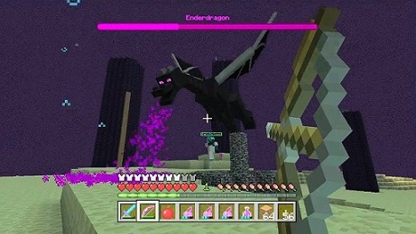
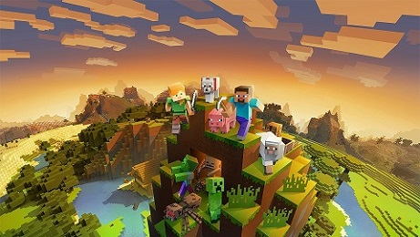

Minecraft è il videogioco più venduto di sempre, è un gioco di sopravvivenza in un mondo virtuale simile a quello reale ma con aggiunte fantastiche, zombie, fantasmi, scheletri e altri nemici cercheranno di attaccarti ogni notte e la sfida consiste nel sopravvivere fino ad arrivare ad uccidere il drago finale nella dimensione dell'END. Steve è il personaggio principale maschile, Alex è la sua variante femminile mentre Herobrine è l'antagonista della storia, il cattivo che cercherà di distruggere il mondo.
Oltre la modalità sopravvivenza in giocatore singolo esistono anche altre tre modalità, la creativa, in cui sei immortale ed hai a disposizione materiali illimitati per sbizzarrire la tua creatività nel costruire, la hardcore, in cui il gioco diventa molto più complicato e hai solo una vita, poi esistono anche i mondi multigiocatore in cui si può giocare assieme a degli amici.
 